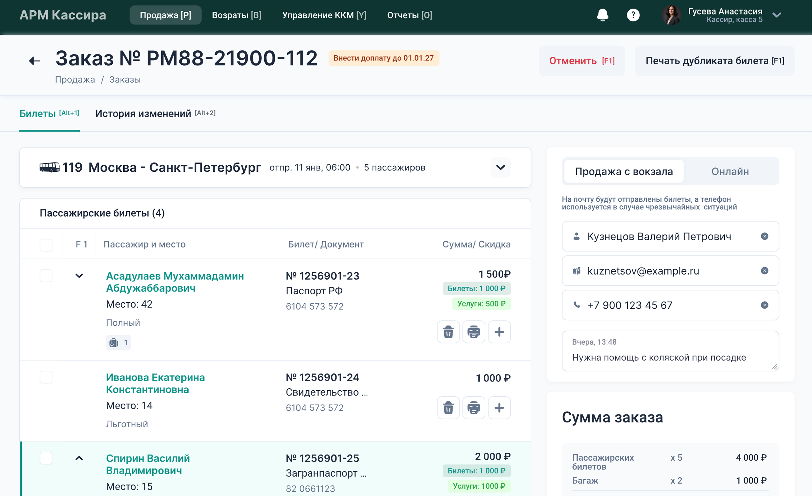

Продукт и аудитория
АРМ кассира — рабочая система для сотрудников транспортных касс. Позволяет оформлять заказы, продавать билеты и проводить оплату в одном интерфейсе.
Интерфейс продажи билетов и оформления заказов


1 · Проблема и моя роль
АРМ кассира — рабочая система для сотрудников транспортных касс. Позволяет оформлять заказы, продавать билеты и проводить оплату в одном интерфейсе.
Кассиры работали в старой системе, освоение которой требовало длительного обучения новых сотрудников. Задача — спроектировать понятный интерфейс, чтобы снизить порог входа, упростить работу с заказами и сократить количество действий при оформлении продажи.
Выстроить иерархию данных и действий: выделить главное для текущей операции, сделать статусы заметными, а последствия действий — понятными.
2 · Изменение заказа
Добавить пассажира или услугу можно было только на этапе оформления заказа. Если заказ уже был оформлен, любое изменение требовало отменить его и оформить заново.
В оформленном билете предусмотрен сценарий редактирования, в котором кассир добавляет пассажиров и услуги к существующему заказу, а система автоматически рассчитывает доплату.
Кассир может добавлять пассажиров и услуги в существующий заказ. Система автоматически рассчитывает доплату.
Цветовое выделение и группировка показывают, к какому взрослому относится услуга и дети без отдельного места. Кассиру проще ориентироваться в составе заказа.
3 · Смешанная оплата
Смешанная оплата отсутствовала: заказ можно было оплатить только одним способом целиком или разбить платёж на отдельные этапы — каждый этап открывал новое модальное окно и требовал лишних кликов.
Итог к оплате и остаток пересчитываются автоматически при добавлении каждого способа оплаты.
Не нужно держать сумму в уме — программа сама показывает, сколько осталось внести.
Меньше ошибок в расчётах при смешанной оплате.
4 · Возврат наличных
Кассир может отменить отдельный платёж, сохранив остальные. Не нужно отменять всю оплату заказа и проводить её заново.
После отмены платежа система обновляет оплаченную сумму и остаток к оплате. Кассир сразу видит, сколько нужно доплатить покупателю.